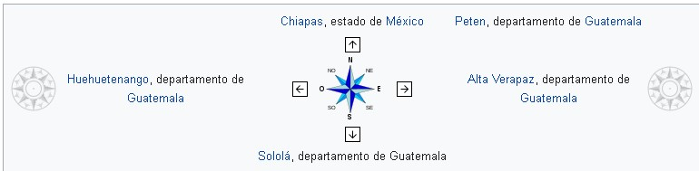

Santa Cruz del Quiché está completamente rodeado por municipios del departamento de El Quiché:8
Norte y noroeste: San Bartolomé Jocotenango
Noreste: San Andrés Sajcabajá
Este: Chinique y Chiché
Sur: Chichicastenango
Sureste: Chiché
Oeste: San Pedro Jocopilas y San Antonio Ilotenango
Suroeste: Patzité
